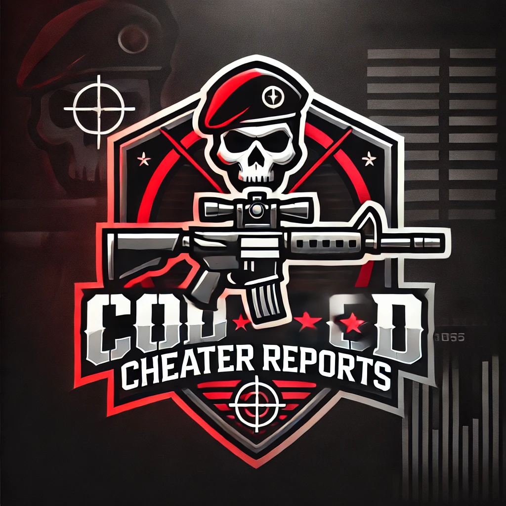

CoD Cheater Reports - Docs
A community-driven cheater reporting platform for Call of Duty (MW2, MW3, BO6), integrated with a website and Discord bot.
üìÖ Q1 - Foundation Phase (Jan‚ÄìMar 2025)
✅ Core System Initialization
- [x] Project repo setup with README, LICENSE, and CONTRIBUTING.md
- [x] Database schema design (Reports, Users, Subscriptions)
- [x] Discord Bot basic setup with /report, /sub, /unsub commands
- [x] Validate Activision ID formats in bot
- [x] Report embedding in Discord with buttons (Flag, Remove Report)
- [x] Unique Report ID system with timestamp
- [x] Report storage system using SQLite
- [x] Basic website wireframe (HTML + PHP or React frontend)
üü° In Progress
- [ ] Activision ID subscription alert system
- [ ] Frontend for viewing report database
- [ ] Discord OAuth2 login system for web
Note: We could use funding and help within this development.
üìÖ Q2 - Feature Expansion (Apr‚ÄìJun 2025)
üÜï Advanced Website Integration
- [ ] Report submission from website
- [ ] Evidence upload system (image/video links or file hosting integration)
- [ ] Public report browser with filter/search (Game, Date, Status)
- [ ] Flag/Appeal system via website & Discord
- [ ] User dashboard to manage own reports & subscriptions
üí° Moderation & Community Tools
- [ ] Report status system (Pending, Verified, Flagged, Removed)
- [ ] Moderator role permissions in bot
- [ ] Mod panel to review/verify reports
- [ ] Community voting system on report credibility
üìÖ Q3 - Scalability & Performance (Jul‚ÄìSep 2025)
üìà Optimization & Infrastructure
- [ ] Migrate to PostgreSQL or scalable DB (optional)
- [ ] Backend optimization (async bot handling, caching)
- [ ] CDN integration for evidence media
- [ ] Add analytics dashboard (reports per day, flag stats, etc.)
üîê Security Enhancements
- [ ] Captcha on web forms
- [ ] Rate limiting & spam detection on Discord bot and web
- [ ] Auto-moderation for false report detection
üìÖ Q4 - Community & Ecosystem (Oct‚ÄìDec 2025)
üåç Community Ecosystem
- [ ] Discord webhooks for report updates
- [ ] API for third-party apps to fetch report data
- [ ] Public documentation for developers
- [ ] Translation/localization support
- [ ] Partnership integration for other anti-cheat groups
üß≠ Stretch Goals / Future Ideas
- [ ] Mobile-friendly web UI (PWA version)
- [ ] Reputation system for users based on report accuracy
- [ ] Browser extension for submitting reports directly from game clips
- [ ] AI-assisted detection/flagging using behavior analytics